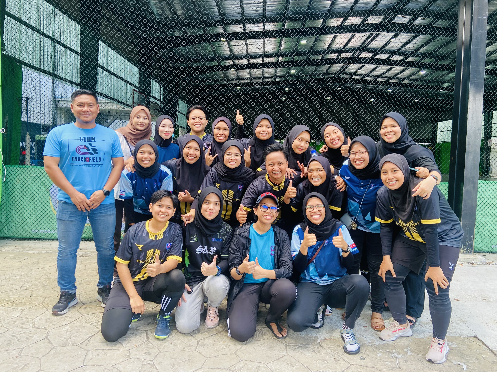
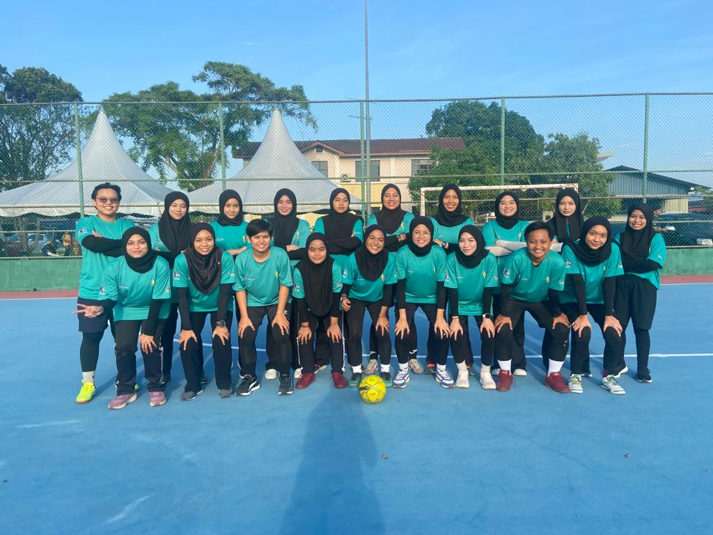

| Name | Nor Aina Haziqah | Photo | |
| Date of Birth | 8 November 2002 | ||
| Race | Malay | ||
| Address | Street | No 8,Jalan Mohideen 5 | |
| Town | Kota Kecil | ||
| District | Kota Tinggi | ||
| State | Johor | ||
| Contact | Mobile Phone | 011-10295056 | |
| Social Media | Grieznaa | ||
| Website | --------- | ||
| Course and Institution | Software Engineering,UTHM | ||
| Programming Skills | Moderate | ||
| Personal Interests | Futsal | ||
| Future Plan in 2024 | Focus akhirat | ||
When it comes to hobbies, I have a few interests, including the art of sleeping (if you can still call it a hobby). But one passion that truly sets my heart racing is futsal. Now, you might be wondering, "Futsal? But you're a woman!" It's a bit unconventional, and I've had my fair share of raised eyebrows and puzzled looks when I mention it. But you know what? I wouldn't have it any other way. Futsal is a sport that I really enjoy and has become an important part of my life. Some people might think it's strange for a woman to be so into this sport, but I've learned to embrace it fully. Futsal doesn't care about a person's gender, and I'm proud to be breaking those ideas. One thing that draws me to futsal is the chance to meet new people. At my university (UTHM), I'm lucky to have friends who love the game as much as I do. We often get together to play futsal, not only because we love the sport but also because it's fun to spend time with people who share our interests. Our futsal journey doesn't end with casual games at campus, though. We've gone one step further by playing in a number of tournaments. These tournaments help us learn a lot and give us the chance to meet and learn from some of Malaysia's best futsal players. I've learned that futsal isn't just about the game; it's also about breaking down barriers and showing that women can do well in any field they choose. What it's about is following your heart's desire, no matter what other people think. It's about how exciting it is to run across the futsal court, dribble the ball, and score the perfect goal.
 When people ask me about my university life, I often find myself saying that it's been great, especially in terms of having friends around. But if they were to ask whether studying has been equally fantastic, my answer might surprise them. The truth is, I'm not a huge fan of studying, but I've discovered a passion for certain activities, like coding. Writing? Well, let's just say it's not exactly my forte. Having friends alongside me throughout my degree has made this journey infinitely better. You see, there are times when you hit those inevitable mental breakdowns, and the only remedy is to step outside and take a breather. That's where my friends come into the picture, and they always make things interesting. When I propose going out for a change of scenery, they respond with a resounding "jommm", and they can never say no.University has its ups and downs. I may not love studying, but coding is like a creative puzzle that I enjoy solving. Writing may not be my thing, but that's okay because we all have our strengths and weaknesses. In the big picture, it's my friends who have made my university experience amazing. They bring laughter, fun, and support into my life. So, when people ask about my time in university, I say it's great because of the friends who make it special. University is a unique journey, and I've learned to embrace what I love and appreciate the friends who make it all the more memorable. Here we are chilling at pantai in Melaka hahaha actually we just finished one of our exams and have another one coming up the next day, but we're the kind of kids who love to reward ourselves.